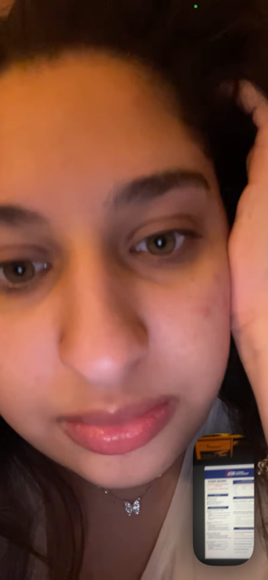
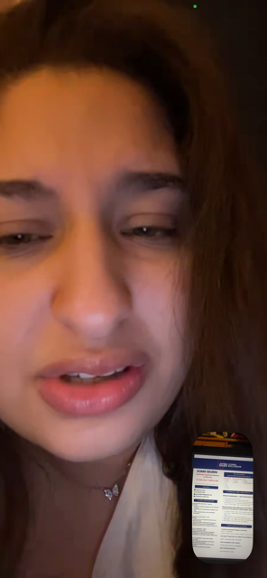

La vérité
Je ne cherche pas d’excuse.
J’ai parlé à une autre fille, et je comprends que ça puisse t’avoir blessée. Même si je regrette profondément, je sais que le regret ne suffit pas à réparer ce que tu as pu ressentir.
Pour SHAÏNES
Je ne voulais pas te faire du mal, mais je sais que ce que j’ai fait a pu te blesser, te décevoir et casser quelque chose entre nous. Ce site n’est pas là pour effacer ma faute. Il est là pour te dire clairement que je la reconnais.
Mon intention
Je ne veux ni te manipuler ni forcer quoi que ce soit. Je veux juste te parler avec sincérité, parce que tu comptes énormément pour moi.
Avec regret, mais surtout avec amour.
La vérité
J’ai parlé à une autre fille, et je comprends que ça puisse t’avoir blessée. Même si je regrette profondément, je sais que le regret ne suffit pas à réparer ce que tu as pu ressentir.
Ce que je ressens
Je n’aime qu’une seule personne, et c’est toi, SHAÏNES. Plus je repense à tout ça, plus je réalise à quel point je tiens à toi et à quel point je déteste t’avoir donné une raison de douter.
Ce que je demande
Je ne te demande pas de faire comme si rien ne s’était passé. Je te demande seulement la possibilité de te parler sincèrement, calmement, et de te montrer que je peux faire mieux.
Ce que je veux te promettre
Si tu me laisses une place pour m’expliquer, je veux la mériter avec des actes, pas seulement avec de jolies phrases.
“Je sais que je t’ai fait du mal. Je suis désolé. Et malgré mon erreur, mes sentiments pour toi n’ont jamais changé.”
Nos moments
Je les ai ajoutées ici parce qu’elles me rappellent nos appels, nos moments simples, et la place que tu as vraiment dans mon coeur.


Un dernier mot
Mon coeur revient toujours vers toi.
Si tu acceptes de me reparler un jour, je serai là pour t’écouter d’abord, parler ensuite, et assumer pleinement ce que j’ai fait.